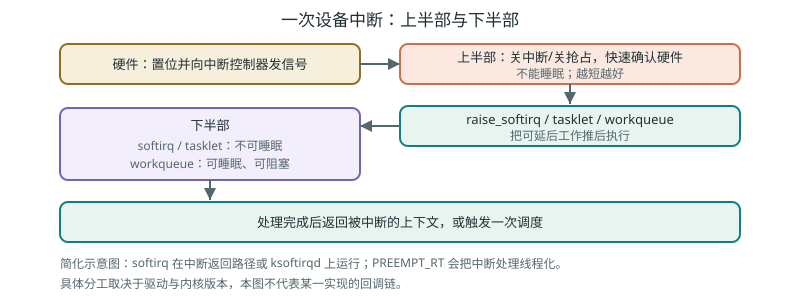

设备完成一次 I/O 后，CPU 如何得知事件发生？中断让硬件能够异步通知处理器，但中断处理路径必须控制执行时间和上下文约束：有些工作需要立即确认设备状态，有些工作则应延后到可调度上下文中完成。
本章从硬中断处理与延后处理的边界开始，比较 softirq、tasklet、workqueue 和线程化中断，再分析 IRQ affinity、/proc/interrupts 与 PREEMPT_RT。不同机制允许的睡眠行为、并发语义和执行上下文并不相同；尤其不能把“下半部”视为单一机制，也不能假定所有中断都在普通进程上下文执行。
一、中断处理的挑战
当中断发生时，CPU硬件自动完成以下动作：保存当前指令地址（PC/CSR）、关闭中断使能、跳转到中断向量表指定的入口。然后内核的中断处理程序开始执行。问题来了——在中断处理期间，CPU不能响应其他中断（或者说，如果允许嵌套中断，复杂度将呈指数级增长）。这意味着中断处理函数必须极快地完成，否则其他设备的中断就会被延迟。
但很多设备的中断处理确实需要做很多工作。网卡中断需要把数据包从硬件缓冲区搬到内核协议栈，磁盘中断需要将DMA完成的请求向上层文件系统提交。如果中断处理函数完成所有这些工作，中断延迟将变得不可接受。
核心思想：中断处理被拆分为两半——上半部（Top Half）只做最紧急、最少量的工作（保存硬件状态、清除中断标志、发起DMA传输），然后立即返回；下半部（Bottom Half）在更宽松的环境中完成剩余的大量处理。这就像急诊室的分类流程——护士先做紧急止血（上半部），然后把病人转移到普通病房做进一步治疗（下半部）。
二、下半部机制全景
Linux内核提供了四种下半部机制，每一种都是在前一种的基础上演进而来。理解它们的设计选择和适用场景，能帮你写出更健壮的驱动代码。

| 机制 | 引入版本 | 可睡眠 | 执行上下文 | 特点 |
|---|---|---|---|---|
| 软中断（softirq） | Linux 2.3 | 否 | 中断上下文 | 静态分配，可并发（同类型可在不同CPU同时执行） |
| tasklet | Linux 2.3 | 否 | 中断上下文 | 基于softirq构建，同类型串行执行，更安全 |
| 工作队列（workqueue） | Linux 2.5 | 是 | 进程上下文（内核线程） | 允许阻塞、可以持有锁、执行大量操作 |
| 线程化中断 | Linux 2.6.30 | 是 | 内核线程（request_threaded_irq） | 将整个中断处理放入内核线程，将主要处理逻辑移到线程上下文，减少对硬中断上下文的依赖 |
softirq：性能最高的下半部
softirq是完全在中断上下文中执行的，不能睡眠、不能持有信号量。但softirq有一个极其重要的属性：同类型的softirq可以在多个CPU上同时执行。这意味着它必须使用自旋锁或其他机制保护共享数据。因为这种复杂度，softirq一般只有对性能极度敏感的核心子系统使用——网络协议栈的 NET_RX_SOFTIRQ 和 NET_TX_SOFTIRQ 就是两个典型的softirq实例。你可以用 cat /proc/softirqs 查看各个CPU上每种softirq的执行次数。
# 查看各个CPU上的软中断计数
$ cat /proc/softirqs
CPU0 CPU1 CPU2 CPU3
HI: 5 2 3 1
TIMER: 1245678 1189345 1312456 1287567
NET_TX: 34567 28901 30123 31245
NET_RX: 567890 512345 534567 589012
BLOCK: 12345 10345 11234 10890
IRQ_POLL: 0 0 0 0
TASKLET: 456 389 412 378
SCHED: 234567 223456 245678 234567
HRTIMER: 1234 1123 1345 1289
RCU: 789012 765432 801234 776543tasklet：更安全但退化的软中断
tasklet基于softirq实现，但加了一个关键限制：同类型的tasklet在任何时刻最多只能在一个CPU上执行。tasklet 同类型实例不会在多个 CPU 上并发执行，但仍可能与其他上下文访问共享数据；这不等于整个驱动不需要锁。但代价就是不能利用多核并行加速同一个tasklet。tasklet 是基于 softirq 的历史机制，仍需按目标内核版本检查其状态与维护方向。新驱动通常应优先评估 workqueue、threaded IRQ 或其他适合的机制；选择取决于是否允许睡眠、并发要求和延迟目标。
workqueue：能睡觉的下半部
工作队列（workqueue）将下半部的工作推迟到内核线程中执行。这意味着你可以在workqueue回调中调用任何可能阻塞的函数——mutex_lock、kmalloc(GFP_KERNEL)、文件系统操作（但不能把任意用户态指针直接带入 worker 并调用 copy_to_user）。workqueue 由内核 worker-pool 管理工作者线程，线程数量和 CPU 绑定策略由 workqueue 类型、负载与内核实现决定；驱动也可创建专用 workqueue。
// 使用workqueue延迟执行下半部操作
// 上半部（中断处理函数）
irqreturn_t my_interrupt_handler(int irq, void *dev_id) {
struct my_device *dev = (struct my_device *)dev_id;
// 保存硬件状态（必须快！）
dev->hw_status = readl(dev->reg_base + STATUS_REG);
// 清除中断标志
writel(0, dev->reg_base + INT_CLEAR_REG);
// 调度工作队列——下半部将在进程上下文中执行
schedule_work(&dev->work);
return IRQ_HANDLED;
}
// 下半部（在kworker线程中执行，可以放心做任何事）
void my_work_handler(struct work_struct *work) {
struct my_device *dev = container_of(work, struct my_device, work);
// 现在可以安全地做大量工作了
// 可以持有mutex、可以分配内存、可以唤醒进程
process_data(dev);
}线程化中断：最新最通用的方案
从Linux 2.6.30开始，request_threaded_irq() 允许将整个中断处理（包括上半部）放在一个内核线程中。你提供一个"上半部"函数（在中断上下文中执行，return IRQ_WAKE_THREAD 时唤醒线程），和一个"thread_fn"（在进程上下文中执行）。如果你不需要在真正的上半部做任何紧急操作，可以传入 IRQF_ONESHOT 标志让内核自动管理中断屏蔽——线程化中断会在执行期间自动屏蔽该中断线，执行完成后重新使能。
线程化中断适合需要在可调度上下文中完成主要处理的设备，但并非所有驱动都应默认采用；性能与延迟需实测。在 PREEMPT_RT 下，大多数中断会被强制线程化，但 IRQF_NO_THREAD、IRQF_PERCPU 等特定中断类型存在例外，具体以当前内核实时文档为准。
机制追踪：一次网卡收包中断，哪些事必须在上半部完成，哪些可以延后？
“快与多”的矛盾靠拆分解决。按中断从到达到结束的顺序看：
- 硬件触发：设备向中断控制器发信号，CPU 在当前指令边界响应（前提是当前未关中断）。
- 上半部（硬中断处理）：保存现场后进入驱动注册的 handler；读取/清除设备的中断状态、把必要数据搬出设备 FIFO 或安排 DMA。此阶段仍可能关中断/关抢占，不能睡眠，应尽量短。
- 触发下半部：把耗时工作推后——
raise_softirq、调度 tasklet，或把work_struct排入 workqueue；NAPI 常用 softirq 轮询收包队列。 - 下半部执行：softirq/tasklet 在中断返回路径或
ksoftirqd上运行，仍不可睡眠；workqueue 在内核线程上下文运行，可以睡眠、阻塞、持锁。 - 返回与调度：处理完成后返回被中断的上下文，或在安全点触发一次调度——若把大量工作塞进上半部，被中断的代码与其他中断就会被推迟得越久。
为什么不能把所有工作都放在上半部？
上半部运行在关中断/关抢占的窗口里，窗口越长，其他中断与调度被推迟得越久，最坏时延就越大。把可延后、可能阻塞的工作放入下半部，既能尽快释放硬件与关中断窗口，又能让 workqueue 在能睡眠的上下文里完成。PREEMPT_RT 则进一步把中断处理线程化，让硬中断只做最小唤醒。
三、中断亲和性与CPU绑定
在多核系统中，中断应该发往哪个CPU？这是中断控制器（如x86的APIC）需要处理的问题。Linux允许你通过 /proc/irq/ 系统接口精细控制每个中断的CPU亲和性（affinity）。
每个IRQ在 /proc/irq/ 下有一个目录，其中 smp_affinity 是一个位图（bitmask），每一位代表一个CPU核心。设置位图中的某一位，相应的中断就会被路由到对应的CPU核心。
# 查看IRQ 130（假设是NVMe磁盘中断）的当前亲和性
$ cat /proc/irq/130/smp_affinity
ff # 默认所有8个CPU都可能处理这个中断（十六进制掩码）
# 将NVMe中断绑定到CPU0和CPU1
$ echo "03" > /proc/irq/130/smp_affinity
# 查看每个CPU上的中断计数
$ cat /proc/interrupts | grep nvme
130: 12345678 9876543 0 0 0 0 0 0 PCI-MSI-msi nvme0q0最佳实践：在高性能网络场景中，通常将网卡的多队列中断和应用的worker线程绑定到同一组CPU上。比如一个4核机器上有两个网卡队列，可以将queue 0的中断绑定到CPU 0-1，queue 1的中断绑定到CPU 2-3，同时将应用线程也绑定到对应核心。这保证了数据包从硬件中断到应用处理的"全路径"都在同一个CPU上完成，最大限度地利用L1/L2缓存。
内核还包含一个 irqbalance 守护进程，它会自动在CPU之间分散中断负载。在大多数通用服务器上，irqbalance是默认启动的。但在追求极致性能的场景（如高频交易、高性能数据库）中，通常关闭irqbalance，手动设置每个中断的亲和性以获得确定性。
四、/proc/interrupts 解读
/proc/interrupts 是诊断中断相关性能问题的第一站。我们来逐列解读它的含义：
$ cat /proc/interrupts
CPU0 CPU1 CPU2 CPU3
0: 123 0 0 0 IO-APIC 2-edge timer
8: 0 0 0 0 IO-APIC 8-edge rtc0
9: 0 0 0 0 IO-APIC 9-fasteoi acpi
18: 0 0 0 0 IO-APIC 18-fasteoi i801_smbus
24: 1234567 0 987654 567890 PCI-MSI-msi edge nvme0q0
25: 0 1234567 0 0 PCI-MSI-msi edge nvme0q1
130: 56789012 51234567 53456789 58901234 PCI-MSI-msi edge eth0-rx-0
131: 48901234 46789012 45678901 50123456 PCI-MSI-msi edge eth0-rx-1| 列 | 含义 | 诊断价值 |
|---|---|---|
| IRQ号 | 中断请求编号，每个设备一个或多个 | 通过号码查 /proc/irq/N/ 下的详细信息 |
| CPU0-CPUN | 该中断在各CPU上的累积触发次数 | 分布不均说明affinity设置有问题 |
| 中断控制器 | IO-APIC / PCI-MSI / GIC-v3 等 | MSI是现代设备的标准，IO-APIC用于传统设备 |
| 触发方式 | edge（边沿触发）或 fasteoi（电平触发） | 电平触发容易产生中断风暴，罕见但一旦发生极难排查 |
| 设备名 | 注册中断时驱动提供的名称 | 快速定位哪个设备产生的中断 |
中断风暴案例：某次线上排查让我亲身体验了什么是"中断风暴"。一台服务器的 /proc/interrupts 中一个USB控制器在1分钟内触发了超过10亿次中断——另一个 cat /proc/interrupts 命令还没打完，计数又涨了数千万。原因是劣质USB键盘的控制器在电气噪声下反复触发中断，而该USB驱动的上半部只清除了一个中断源而未清除另一个。结果CPU被这个中断完全吞噬，所有用户态进程都被饿死了。修复方法是在驱动中增加对所有待处理中断位的全面清除。
五、实时性与PREEMPT_RT
标准Linux内核是一个"尽力交付"的分时系统——它保证进程最终会得到CPU时间，但不保证在特定时间窗口内一定得到。这对大多数应用来说足够了，但对工业控制、机器人、音频处理等实时场景来说，远远不够。
为什么中断处理会破坏实时性？
问题出在标准内核的中断模型上：中断处理函数的优先级高于任何用户进程。当一个中断发生时，CPU会暂停当前运行的用户进程去执行中断处理函数——即使这个用户进程是一个需要在1ms内响应的实时任务。更糟糕的是，如果中断处理函数持有某个锁，而实时任务也在等待这个锁——实时任务的截止时间就会被中断处理函数的执行时间所"污染"。
PREEMPT_RT如何解决？
PREEMPT_RT补丁集（从Linux 6.12开始已经完全合并入主线）采取了一个根本性的方案：将所有中断处理强制线程化。中断到来时，不再是中断处理函数抢占当前进程，而是唤醒一个内核线程——这个内核线程参与调度器的正常调度，可以被更高优先级的实时任务抢占。换句话说，中断不再是"不可中断的"，而是变成了一个普通（但高优先级）的调度实体。
PREEMPT_RT的哲学：标准Linux说"中断必须尽快响应"——所以中断处理函数可以抢占任何进程。PREEMPT_RT说"实时任务必须在截止时间前完成"——所以任何资源（包括CPU）都不能被优先级反转所阻塞，包括中断。这个视角转换意味着：中断不再是特权的，中断线程化后它只是一个普通的任务。代价是中断响应延迟略有增加（因为增加了调度开销），但确定性大幅提升。
除了中断线程化，PREEMPT_RT还做了几项关键改造：将大部分自旋锁替换为可睡眠的 rt_mutex（避免优先级反转）、将临界区通过 local_lock 保护而非全局锁、增加更多的抢占点。这些改造让Linux从一个"尽量公平"的系统变成了一个"保证可预测"的系统——这是从"软实时"迈向"硬实时"的关键一步。
六、结语与下一章预告
本章我们从中断处理的核心矛盾出发，逐层深入了下半部的四种机制（softirq、tasklet、workqueue、线程化中断），学习了通过 /proc/irq/smp_affinity 和 /proc/interrupts 诊断和优化中断性能的方法，最后探讨了PREEMPT_RT如何将中断线程化以实现硬实时能力。中断是OS响应外部世界的"触发机制"，没有中断，操作系统就像没有传感器的人——对外界一无所知。
只读观察：中断与软中断计数
环境：Linux 主机，普通用户权限；只读取 /proc，不绑定亲和性、不修改中断配置。中断号、设备名与计数随内核与硬件变化。
head -n 12 /proc/interrupts
head -n 12 /proc/softirqs
cat /proc/sys/kernel/threadirqs 2>/dev/null || echo '无 threadirqs 开关'
ls /proc/irq | head预期：/proc/interrupts 按 CPU 列列出各中断线的计数与设备/控制器名；/proc/softirqs 按类型（如 NET_RX、TIMER）列出各 CPU 的执行次数；threadirqs 为 1 时表示中断处理被线程化。
解释：计数只反映发生次数，不代表处理耗时或实时性，也不能单凭某条中断计数高就断言性能瓶颈（需结合 /proc/irq/<n>/smp_affinity、软中断分布与 CPU 利用率）。可见 /proc/irq/<n>/ 下存在 affinity 控制项，反映出中断可被绑定到特定 CPU。清理：均为只读命令。
中断的触发离不开时间——定时器中断是操作系统一切时间相关功能的"心跳"。下一章，我们将深入研究操作系统的时间管理：jiffies、hrtimer、以及现代CPU时钟源的演化故事。